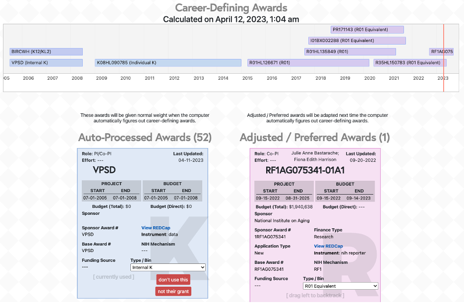
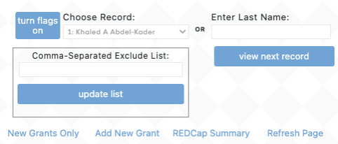

Grant Wrangling is an opt-out process where grants are automatically included in Flight Tracker’s processing unless removed or modified during processing. Thus, it works when you do nothing, though false matches are possible.

A timeline at the top displays career-defining awards. The left column, Auto-Processed Awards, contains all downloaded grants. These grants are automatically processed and integrated into the scholar's record by Flight Tracker. The right column, Adjusted / Preferred Awards, contains grants that have been chosen to be handled manually. You can drag-and-drop between the two columns. Each big box is a grant. During processing, Flight Tracker will automatically combine different years of the same grant into one grant.
There are several changes that you can make:
At the top of most boxes, the name(s) of the PI(s) of that grant will appear in the center. If one name is consistently mismatched (i.e., if you click “not their grant” multiple times for the same wrong name), then you can instruct the system not to download this name again. Copy the mismatched name and paste it into the Comma-Separated Exclude List above the timeline; then click “update list.” More than one name can be on this list, and as the name indicates, each name should be separated by commas.
